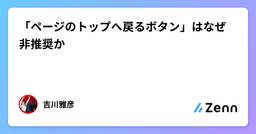

Zennの「CSS」のフィード
フィード

2 カラムは、崩れたときと固定したときで別々に壊れる
Zennの「CSS」のフィード
書籍の詳細ページを 2 カラムにしました。左に本文、右に購入カードです。PC で見ると狙いどおりでしたが、実際には同じ日に 2 つの不具合が出ました。モバイルで購入導線がページ最下部に沈んでいたPC で購入カードが透けて、下の見出しと重なったどちらも「2 カラムのレイアウト」から出てくるもので、片方はカラムが崩れたとき、もう片方はカラムが固定されたときに現れます。 1. カラムが崩れると、DOM 順が表示順になる最初の構造はこうでした。<div class="grid max-w-4xl gap-10 md:grid-cols-[1fr_16rem]">...
1日前

h1が大きくならないのはバグではなく、タグで見た目を決める癖を折る設計だった
Zennの「CSS」のフィード
!Tailwind CSS を初めて本格的に使ったときに手が止まった話です。バージョンは v4。WordPress のテーマを書いてきた側から見ると、最初は「壊れている」ように見えました。 h1 を書いたのに大きくならない見出しを置いたのに、本文と同じ大きさで出ました。ul に黒丸も付きません。CSS が読み込まれていないのかと思って確認しましたが、読み込まれています。Tailwind のクラスは効いている。効いていないのはタグそのものの見た目でした。原因は Preflight です。Tailwind が最初に読み込むリセットCSSで、ブラウザ既定のスタイルを意図的...
2日前

空色のヘッダに白抜き文字を置いてはいけない — コントラスト比の計算
Zennの「CSS」のフィード
こんにちは。小学生向けのニュースサイト、こどもニュースをつくっています。このサイトのヘッダは、上段が空をイメージした色付きのバーです。ライトモードでは空色に雲と太陽が浮かんでいます。色付きのバーなので、最初は白い文字を置きました。よくある組み合わせです。読みにくかったので、変えました。 数字で見る使っている空色は #4aa8ff です。この上に白い文字を置いたときのコントラスト比は 2.5:1 でした。WCAG の基準では、通常サイズの文字で 4.5:1 が必要です（AA レベル）。大きい文字なら 3:1 に緩和されますが、ナビゲーションの文字は大きくありません。2.5:1...
2日前

【CSS】border-imageで背景色を親要素からはみ出して画面幅いっぱいに広げる方法
Zennの「CSS」のフィード
1. はじめに「innerやcontainerをはみ出して、背景色を画面幅いっぱいにしたい！」Webコーダーなら一度は出会うであろうデザインでしょう。そして最初は困惑します。(ソースは一年目の時の私です)今回はたった1行でこの問題を解決する方法をご紹介します。他の実装方法も記載していきます〜(解説は3から) 2. border-imageとは軽くborder-imageの説明を記載しておきます。border-imageは、枠線に画像をつけることのできるプロパティです。以下のような書き方で指定を行います。border-image: [ソース] [スライス] / ...
3日前

“上書きできる”Ionicテーマへ。!importantとShadow Partsを見直したv9.1.0
Zennの「CSS」のフィード
1つのion-radio-groupで2つのInset Listを囲む。Ionicでは自然な次のマークアップで、Listの角丸と区切り線が崩れる不具合がありました。<ion-radio-group> <ion-list inset="true">...</ion-list> <ion-list inset="true">...</ion-list></ion-radio-group>きっかけは、利用者から届いたIssue #129です。最小再現を追うと、単に角丸を直すだけでは済みませんでした。テーマのC...
3日前

【GSAP入門】CSSの animation-delay 手計算から卒業する、実務で使えるGSAP基礎とScrollTrigger
Zennの「CSS」のフィード
はじめにAstro.jsのプロジェクトで、GSAP(GreenSock Animation Platform)を使った演出を数多く実装する機会がありました。たとえば次のような演出です。見出しや画像をふわっと表示させる登場演出スクロールに合わせてコンテンツが順番に表示される演出(ScrollTrigger)CSSでレイアウトやスタイリングは書いてきたものの、transitionや@keyframesを使ったアニメーション実装の経験はほとんどなく、JavaScriptのアニメーションライブラリも初めてでした。この記事は、同じように「CSSは書けるけど、アニメーションはガッツ...
3日前

「shi」でも「si」でも正解にする。Vanilla JSでタイピングゲームの入力判定を作る
Zennの「CSS」のフィード
猫種と毛柄は、どちらも猫の話ですが別のものです。「メインクーン」は猫種で、「キジトラ」は毛柄です。その2つに、猫のからだとしぐさの言葉を加えて、猫に関する言葉だけが出てくるタイピングゲームを作りました。名前はねこタイプ、全120語で、30秒・60秒・90秒から時間を選べます。https://asobi-nekotyping.vercel.app作りはじめてすぐに分かったのは、このゲームで一番面倒なのはゲーム部分ではなくローマ字の入力判定だという点でした。「しゃむ」は shamu でも syamu でも正しく、「ニャー」の長音をどう打つかは人によって違います。この記事では、Van...
4日前

CSS aspect-ratioプロパティ
Zennの「CSS」のフィード
😄この投稿は、codingeverybody.jpのコンテンツをもとに作成しています。aspect-ratioプロパティは、要素の縦横比（幅に対する高さの比率）を設定します。このプロパティを使用すると、一方のサイズだけを指定しても残りのサイズが自動で計算され、レスポンシブレイアウトでも一定の比率を簡単に維持することができます。特に、画像（<img>）や動画（<video>）、<div>要素など、要素ボックスの横幅（幅）と高さ（高さ）の比率を簡単に維持・調整・設定できます。 形式の構文selector { aspect-ratio:...
4日前

height: 100% は親の高さを見る。その親の高さは自分で決まっていた
Zennの「CSS」のフィード
!2作目のポートフォリオとして「Hubpin」（分散した発信を1か所に集めるハブサイト）を作りながら書いています。リポジトリ: https://github.com/Matsutake29/hubpinNext.js（App Router） + Supabase + Tailwind CSS カードを開いたら、隣の行に重なったグリッドに並べたカードを、押すと説明文が開く形にしていました。開いた瞬間、展開パネルが <li> からはみ出して次の行のカードと重なります。パネルの中の文字は、隣のカードに隠れて左端が読めない状態でした。書いていたのはこれだけで...
5日前

縦書きで実体参照の `&` だけが横倒しになる
Zennの「CSS」のフィード
こんにちは。小学生向けのニュースサイト、こどもニュースをつくっています。このサイトには縦書きの表示モードがあります。縦書きでは、英数字や一部の記号をそのままにすると横倒しになるので、span で包んで正立させています。その処理を入れた後も、& だけが横倒しになる記事がありました。 症状「コピー&ペースト」のような表記で、& が寝ています。他の記号（% や ℃）は正しく立っているので、& に固有の何かがありました。さらに調べると、同じ & でも寝る記事と寝ない記事があります。 原因: 実体参照で書かれていた記事の HTML には、&...
6日前

新米エンジニア成長記 #2 〜大文字の英字を使った表現〜
Zennの「CSS」のフィード
はじめにフロントエンドエンジニアをしているRyogaです。今回は、Webページの見出しなどでよく使われる大文字の英字を使った表現の最適解を教わったので、私と同じ初学者の方々や、ご存じでない方々に向けてまとめていこうと思います。 大文字の英字を使った表現とは執筆のために気取った言い方をしていますが、大文字の英字を使った表現とは、簡単なものです。例として以下の画像をご覧ください。こちらは弊社のコーポレートサイトから引用したものですが、トップページの見出しに「OUR BUSINESS」という文言が使用されています。この見出しを実装しようと思った時、あなたならどのように実装...
7日前

仕様書に書かれていない判断が、実物のCSSにだけ残っていた
Zennの「CSS」のフィード
!2作目のポートフォリオとして「Hubpin」（分散した発信を1か所に集めるハブサイト）を作りながら書いています。リポジトリ: https://github.com/Matsutake29/hubpinNext.js（App Router） + Supabase + Tailwind CSS自分で作った静的サイトを、Next.jsのアプリに作り直しています。デザインの仕様書は自分で書いたものが残っていました。移植リストも作りました。色とフォントを写して、あとはコンポーネントに割り直すだけ。移すだけのはずでした。その移植リストを、現物のCSSが否定してきました。 ...
7日前

負のmarginで短いページだけフッターが重なる原因をDOMRectで切り分ける
Zennの「CSS」のフィード
大きなページヘッダーへ本文を重ねるデザインで、本文の長いページは問題ないのに、内容が1件しかない一覧ページだけフッターがヘッダー背景へ入り込む不具合がありました。見た目だけでは、次のどれが原因か判断しにくい状態でした。z-indexによる重なり順positionによる通常フローからの離脱overflowによる切り抜き負のmargin-topによる要素位置の移動短い本文による高さ不足実際の原因は、本文を上へ重ねるための負のmarginと、本文要素の高さが内容量任せになっていたことの組み合わせでした。この記事では、特定のフレームワークには依存せず、getBoundi...
7日前

「ページのトップへ戻るボタン」はなぜ非推奨か 159
159
Zennの「CSS」のフィード
前提と問いデジタル庁デザインシステムで公開されていた「スクロールトップボタン」が、現在では非推奨にされています。なぜ非推奨なのでしょう。調べると、さまざまな問題があることが分かりました。!2026/9/3 追記「『ページのトップへ戻るボタンは非推奨だよ、みんな使わないでおこうね』とデジタル庁が言っている」わけではなく、デジタル庁で自ら作成した「スクロールトップボタン」というコンポーネントを自ら使わないでおこうとしたということです。どういった課題があったのかを予想する過程で、出たきた問題点（主にWCAG関連）を共有することを今回の記事では目的としています。ですので、「非推奨...
7日前

作った人が書く、Plumeria から抜ける方法
Zennの「CSS」のフィード
zero-runtime も atomic CSS も、今はどのライブラリも言う。差にならない。採用を止めているのは性能ではなく、入れたあとに出られるかどうかが誰にも分からないことだと思う。移行ツールは大抵「入る」方向にしか用意されていないし、用意されていても検証されているのは作者の手元だけで、公開されているのは主張であって事実ではない。Plumeria の codemod は両方向にある。ただ、それだけなら他にもある。書きたいのは、何が保証されていて、何が保証されていないのかを先に決めたという話だ。 「戻せる」の定義を先に決める素朴な定義はこうなる — 変換して、逆変換...
9日前
日本語フォントは unicode-range が効かない — Google Fonts をやめて 729KB を 219KB にした
Zennの「CSS」のフィード
個人サイトの本番トップを実測したら、フォントだけで 729KB / 37 リクエストありました。ページ全体が 1,366KB / 47 リクエストだったので、半分以上がフォントです。Google Fonts から Inter と Noto Sans JP を読んでいただけです。自己ホスト＋サブセットに変えて 219KB / 2 リクエストになりました。!この記事はサイトに配信するフォントの話です。OG 画像を生成するときにフォントを埋め込む話（next/og で豆腐を出さない）は別の記事で、対象も手法も違います。 なぜ日本語だと膨らむのかGoogle Fonts は uni...
10日前
Next.js 16のscroll-behavior警告をdata-scroll-behaviorで整理する
Zennの「CSS」のフィード
Next.js 16のApp Routerでサイト内を移動したところ、開発環境に次の警告が出ました。Detected `scroll-behavior: smooth` on the `<html>` element.To disable smooth scrolling during route transitions, add`data-scroll-behavior="smooth"` to your <html> element.Learn more: https://nextjs.org/docs/messages/missing-data-sc...
10日前
カップ麺を待つ3分をモグラ叩きにした。Vanilla JSで2つの時間を扱う
Zennの「CSS」のフィード
カップ麺の完成を待つ3分間は、短いようで長いです。そこで、待っている間だけ無心で叩けるモグラ叩きと、3分・5分のカップ麺タイマーを同じページに置きました。名前は無意味クリッカーです。https://asobi-clicker.vercel.appこの記事では、Vanilla JavaScriptで次の仕組みを実装した方法を紹介します。setTimeout を使ったランダムな出現ループ時間とともに速くなる難易度操作感を悪くしない220msの判定猶予実時間を基準にしたカウントダウンクリック座標へ残るCSS製の肉球スタンプ7種類のイラストから作る結果画像と、端末別の共有...
11日前
デザインガイド1枚で+12点、ローカルLLM生成の実測
Zennの「CSS」のフィード
ローカルのqwenに「架空の人物のポートフォリオサイトを1ページ作れ」と投げて、モデルとガイドの有無を変えながら実測した。M5 Maxの実機で最短3分57秒、最長37分09秒。デザインガイドラインをシステムプロンプトに1枚足すかどうかで、同じモデル・同じタスクの結果が35点満点の自己採点で21点と33点に分かれた。この記事は結果と数値の話。生成させる仕組み（ガード付きハーネス、masterとworkerの体制、指示系ファイルの設計）は運用編とガードの記事に分けた。先に結論を4つ。ガイドを与えれば、ローカルqwenは「そのまま公開できる」ポートフォリオを一発で作る。 4本すべてが...
11日前
カードの上端に密着するツールバーを角丸に沿わせる
Zennの「CSS」のフィード
こんにちは。小学生向けのニュースサイト、こどもニュースをつくっています。記事は角丸のカードに入っていて、その上端に表示設定のボタン帯を付けています。ふりがなの有無や文字サイズを、記事のすぐそばで変えられるようにするためです。この「上端に密着させる」で、角丸の扱いに少しはまりました。 何が起きるか親のカードには角丸が付いています。子のボタン帯は四角です。そのまま上端に置くと、親の角丸の外側にボタン帯の角がはみ出します。カードの丸みが台無しになります。素朴な対処は、ボタン帯の左上と右上にも同じ角丸を指定することです。border-top-left-radius: 12px;...
11日前